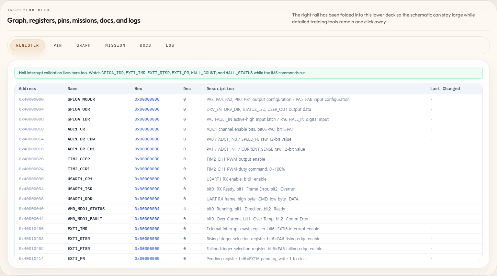
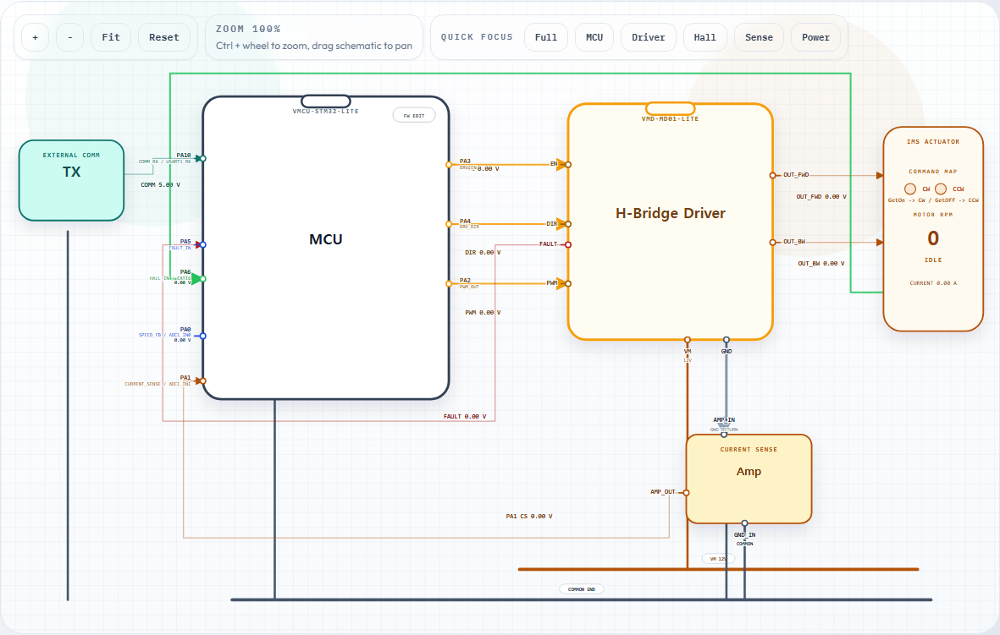

실습 장비가 없어도 C 코드 변화와 MCU 동작 원리의 관계를 단계적으로 확인할 수 있도록 만든 브라우저 기반 학습 도구입니다. 실행 결과를 GPIO·register·graph·log로 나눠 읽을 수 있습니다.
Virtual MCU Training Environment
Overview
Problem
코드만 보거나 로그만 확인하면 실행 결과가 왜 달라졌는지 설명하기 어렵습니다. 하드웨어 상태와 실행 흐름을 여러 화면에서 오가야 하는 학습 부담도 있었습니다.
Approach
코드 편집과 실행 결과를 한 작업 단위로 묶고, 상태가 바뀌는 지점을 서로 다른 시각화에서 동시에 확인하게 구성했습니다.
- 브라우저에서 C 코드 작성·수정
- 실행 결과를 GPIO와 회로 시각화로 확인
- register 변화와 graph 추이 추적
- Runtime Log로 실행 흐름 다시 읽기
Screen evidence
실습을 선택하고 코드를 실행한 뒤, GPIO·register·graph·log에서 같은 결과를 서로 다른 관점으로 확인합니다.



